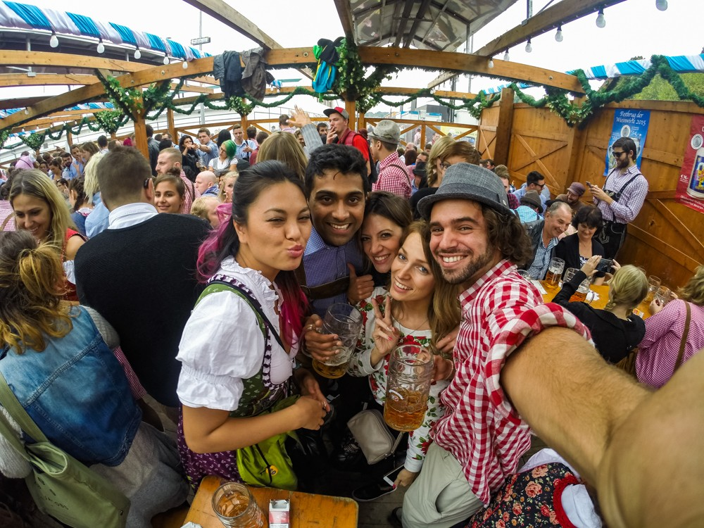
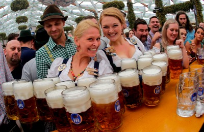

History of Oktoberfest
Oktoberfest, the world's largest beer festival, is held annually in Munich, Germany. The 16-day party attracts over 6 million people every year who consume 1.5 million gallons of beer, 200,000 pairs of pork sausage, and 480,000 spit-roasted chickens during the two-week extravaganza. While the event reinforces stereotypical images of beer-loving, meat-loving Germans dressed in dirndls and lederhosen, visitors to the annual event come from all over the world. Oktoberfest is in fact one of Munich's largest and most profitable tourist attractions. It brings over 450 million euros to the city's coffers each year. The folk festival has given its name to similar festivals worldwide that are at least in part modeled after the original Bavarian Oktoberfest. The largest Oktoberfest held outside of Germany takes place each year in the twin cities of Kitchener-Waterloo in Canada, where a large ethnic German population resides. The largest such event in the United States is Oktoberfest-Zinzinnati in Ohio, which boasts half a million visitors each year.

Oktoberfest events
Since its origins in 1810, the Oktoberfest has changed substantially. The horse races were last held in 1960, and the agricultural show is put on only every four years. The event still takes place on the "Theresienwiese" ("Theresa's meadow"), which was named after the new bride; to the locals, it's simply known as "Wies'n". During the two weeks before the first Sunday in October, these fairgrounds are transformed into a city of beer tents, amusements, rides, performers, and booths of vendors peddling gastronomic delights and traditional confections. The mayor of Munich opens the festivities at noon on the first day of the fair when he drives the wooden tap into a barrel of beer and proclaims: O'zapft is! ("It's tapped!").
The Costume and Riflemen's Procession takes place on the first Sunday of the festival, in which some 7000 performers -- groups in traditional costumes and historical uniforms, marching bands, riflemen, thoroughbred horses and other livestock, old-fashioned carriages, and numerous floats -- parade through the streets of Munich's city center showcasing the diversity of local, regional, and national customs. The second Sunday of the Oktoberfest features an open-air big band concert involving the 400 or so musicians who comprise all of the Oktoberfest bands.
Between events and beer tents, guests can traverse the 103 acre Oktoberfest grounds to ride a Ferris wheel, roller coaster, or water slide, navigate their way through a labyrinth, visit a haunted house, be entertained by numerous types of performers, take a look at the flea circus, stop off at one of dozens of game booths, or take a festival tour, among other things.

Oktoberfest beer
Oktoberfest beer is of a variety called Märzen. Darker and stronger than traditional beer, Märzen contains up to 6% alcohol, is bottom-fermented, and is lagered for at least 30 days. Before the advent of modern refrigeration techniques, this type of beer was brewed in March (as its name suggests) and allowed to age through the summer, so that it was ready to drink by late summer or early fall. Like all German beer, the Oktoberfest beer is brewed according to strict German standards (called the Reinheitsgebot and in effect since 1516) that precisely define the four ingredients allowed in the brewing of beer: barley, hops, malt, and yeast.
Just 6 Munich breweries - Augustiner, Hacker-Pschorr, Hofbräu, Löwenbräu, Paulaner, and Spaten - are permitted to serve beer at the festival. 14 larger and several smaller beer tents and beer gardens provide enough seating for 98,000 visitors at a time. Beer is served by the Maß, a one-liter mug, and costs between 9 and 10 euros. Beer maids and waiters must be able to carry 10 of these beer-filled mugs at a time..

Oktoberfest food
Visitors consume large quantities of food, most of which consists of traditional hearty fare. Readily available all over the fairgrounds are Hendl, whole chickens grilled on a spit and typically sold in halves. Variations are the spit-roasted duck or goose. Roasted meats, especially pork, and potato dumplings are served up with the traditional red cabbage and apple dish (Blaukohl). Local specialties such as roasted ox tails, grilled pork knuckles, or Bavarian Weißwürste (steamed white veal sausages served with sweet mustard), sauerkraut, and a pretzel or bread roll are found on just about every menu. Visitors hankering for some seafood might try the charcoal-fired fish-on-a-stick (Steckerlfisch).
Smaller appetites are satisfied by potato salad or potato soup, and even vegetarians won't go hungry, feasting on massive warm, soft pretzels, cheese plates with bread, or one of the many meatless dishes served up in each of the tents. Typical dessert dishes include Dampfnudel, a steamed honey-dumpling served with vanilla sauce, apple strudel, and Kaiserschmarrn, a sugared pancake with raisins.
Concessions peddling a variety of sweet snacks are also scattered across the landscape. From pan-roasted, sugar-glazed almonds (gebrannte Mandeln) to cotton candy (Zuckerwatte), from glazed fruits to ice cream, Munich's Oktoberfest has something to satisfy every sweet tooth. The decorated gingerbread hearts with slogans and phrases iced onto them might be more of a feast for the eyes than the stomach
.jpg)
Oktoberfest music
Oktoberfest is known as much for its traditional folk music as it is for its beer drinking. Popular and folk music, marches, and polkas make up the oompah music Germany is stereotypically famous for around the world. As the evening wears on, the music becomes louder and more and more people begin to sing, linking arms and swinging beer mugs from side to side, some standing and swaying and dancing on benches or tables. Before each break, the band will offer up "ein Prosit der Gemütlichkeit", a toast to contentment, congeniality, and relaxation.
German folk music is not the only sound you will hear emanating from the massive beer tents. International hits like "New York, New York", "Country Road", "YMCA" and even disco- and rock-inspired tunes emanate from the beer tents. Still, you won't have to look far to find a brass band pumping out a German drinking song: Eins … zwei … g'suffa! Prost!
.jpg)